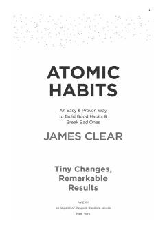

AHKichik odatlar orqali katta natijalarga erishish yo'llari.
James Clear tomonidan yozilgan 'Atomic Habits' kitobi kichik odatlarning hayotga katta ta'sir ko'rsatishi haqida. Muallif to'rtta asosiy qonun orqali yaxshi odatlarni shakllantirish va yomon odatlardan qutulish usullarini tushuntiradi. Kitob ilmiy tadqiqotlar va real hayot misollariga asoslanib, o'zgarishga amaliy yondashuv taklif etadi.